Close in the crackswide in the halls
The camera now reads the cave around the doll. In a tight crack it closes in, and in the great halls it eases out until the whole space shows. Standing still, W or S (or the arrow keys) turns her head up or down, and a moment later the view follows her gaze.
Make the camera a bit more dynamic and interesting in the game, the scale should change depending on the size of the room around. For huge rooms the camera should smoothly zoom out, for narrow corridors the camera should zoom in to feel more claustrophobic.
Every frame the game sends 24 rays out from the doll through the cave walls and averages how far they get. It uses a geometric mean, so a low ceiling or a wall at her shoulder counts for more than one long sightline down a shaft. I measured this at every place in the game you can stand. It runs from about 1 m in the tightest crawls to 12 m and more in the Ink Mere and the Loom, with a typical room near 5.7 m. Each area keeps its own base view, and the camera scales it by how this spot compares with that typical room: down to two-thirds in a crack, up to about 1.4× in a hall.
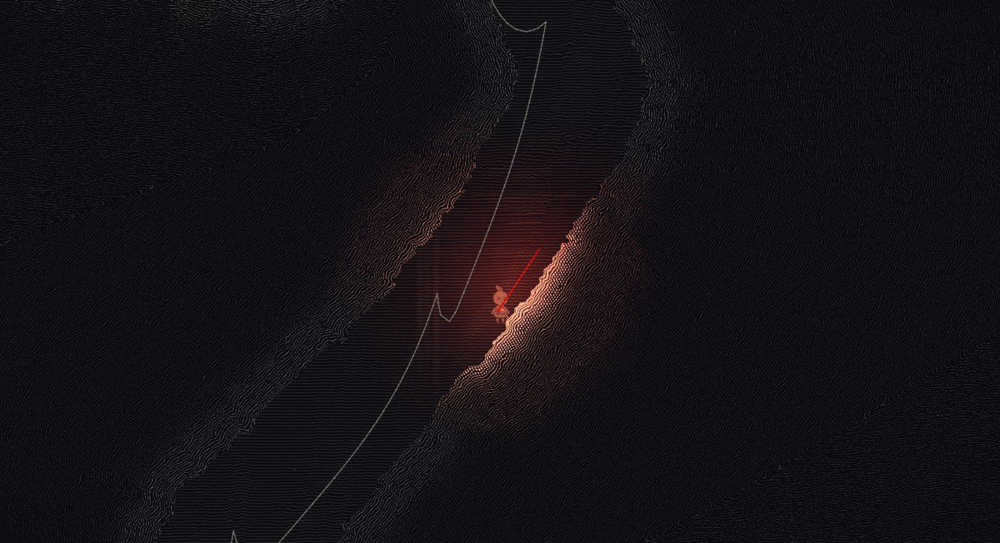
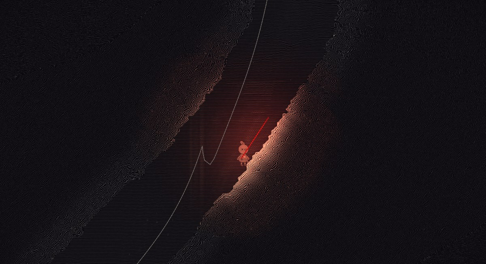
BeforeAfterDrag the thread to compare
A crack in the Root Gardens: the view closes from 16 m tall to 12 m, and the walls press in.
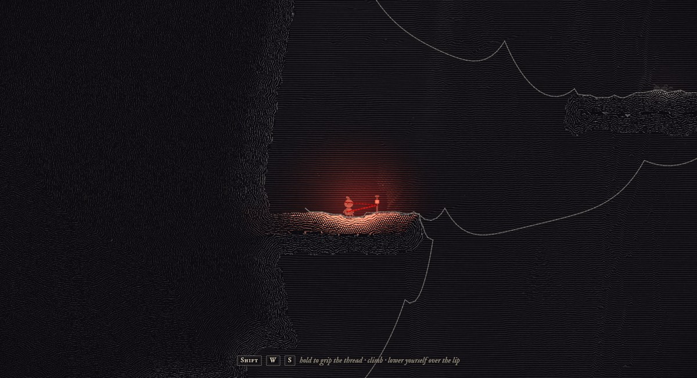
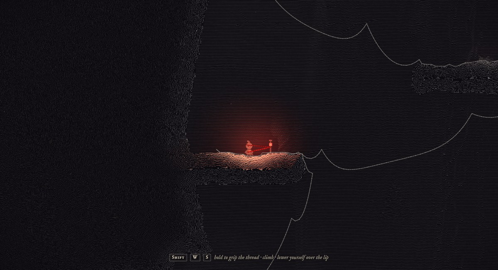
BeforeAfterDrag the thread to compare
An ordinary room in the Throat hardly changes (19 m to 18 m). Typical rooms keep the framing you are used to.
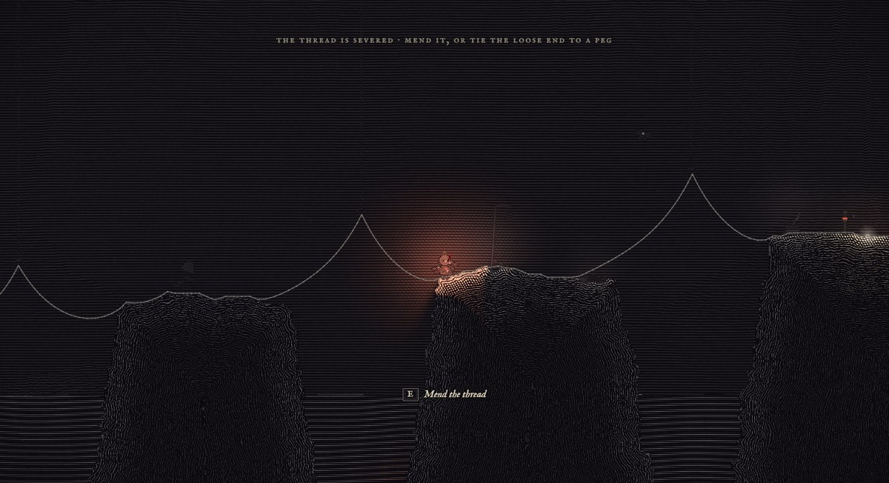
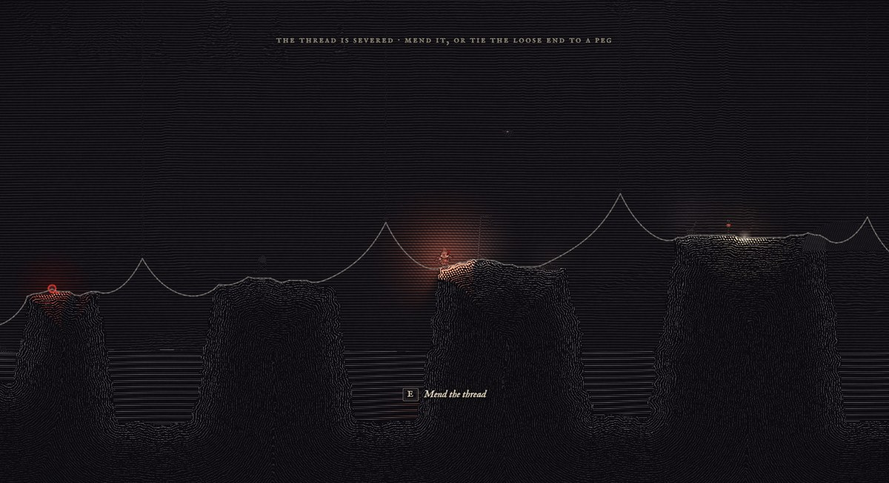
BeforeAfterDrag the thread to compare
Over the Ink Mere the view draws back from 19 m to 27 m. More of the islands and the drips ahead are in sight before you swing for them.
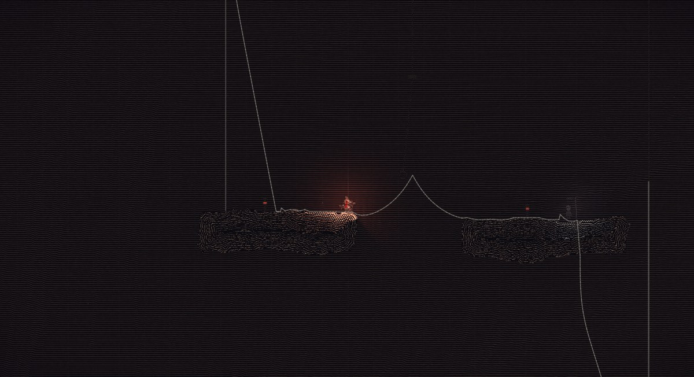
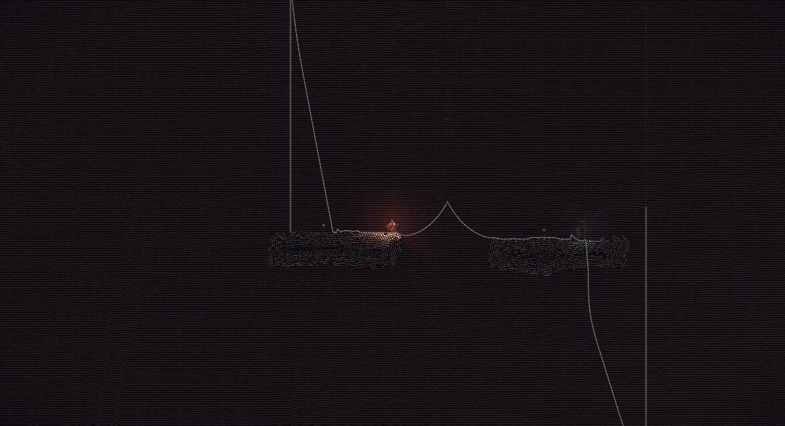
BeforeAfterDrag the thread to compare
The Loom is the widest place in the game, so it opens furthest (23 m to 31 m, the cap). The close shot on her at the very top of the Loom is unchanged.
| Where | Open space around her | View height before | After |
|---|---|---|---|
| A crack in the Root Gardens | 3.2 m | 16 m | 12 m |
| A room in the Throat | 5.1 m | 19 m | 18 m |
| The Bell Gallery pillars | 10.3 m | 19 m | 25 m |
| The Ink Mere | 12.2 m | 19 m | 27 m |
| The Loom | 16.4 m | 23 m | 31 m |
Also pressing s (or arrow down) should make the doll look down and pan the camera a bit down. Same for w/arrow up.
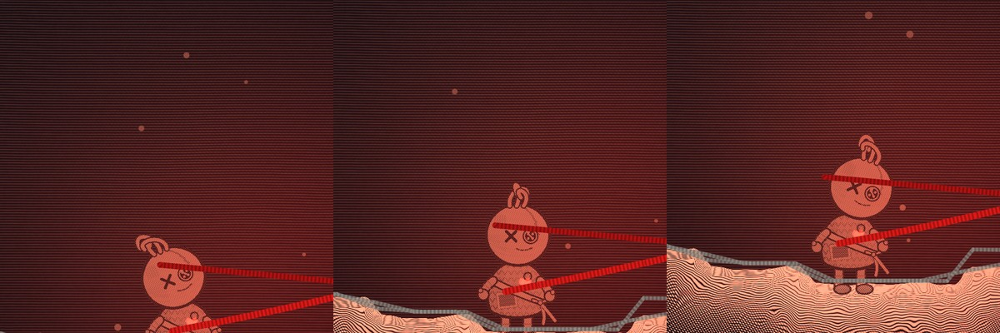
Her head turns on the neck at once. If you keep holding the key for a fifth of a second, the view glides a third of the screen down (or a quarter up) and stays there while you hold it. When you let go, both settle back. The short delay means a quick tap doesn't jerk the camera.
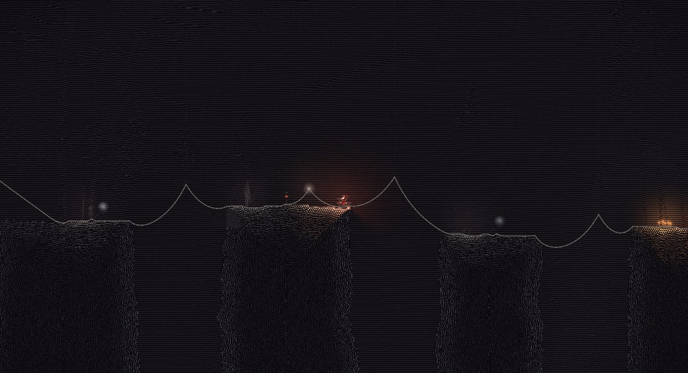
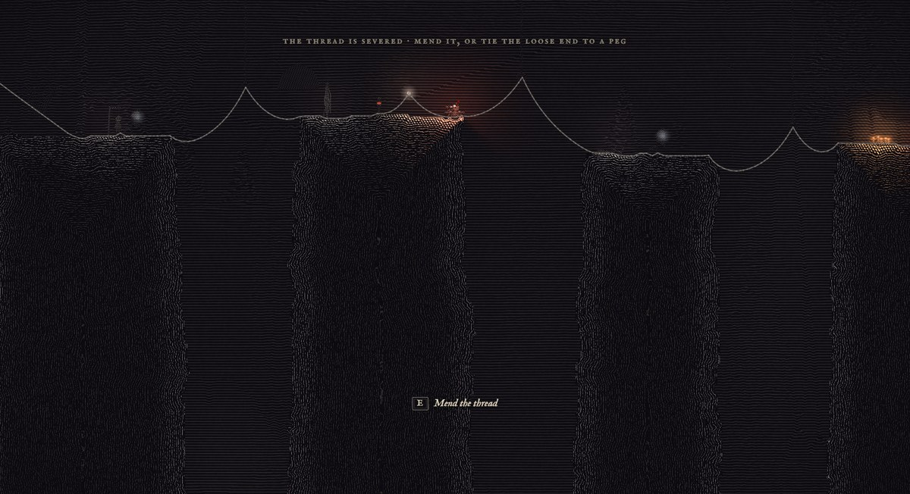
LevelHolding SDrag the thread to compare
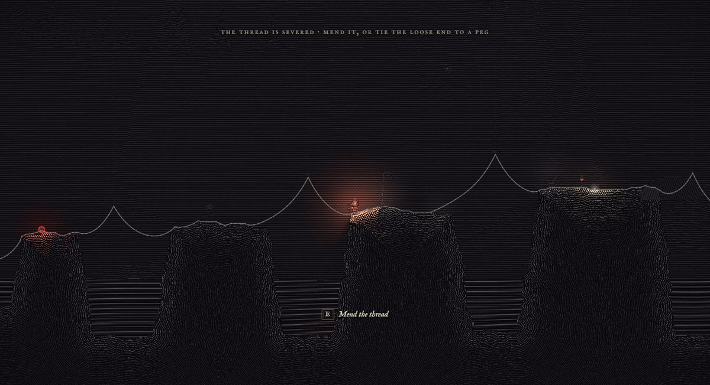
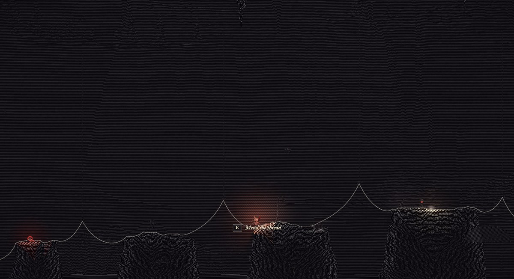
LevelHolding WDrag the thread to compare
You can look only while standing free. W and S already reel the thread when you grip it, climb ropes, and lower you over a lip, and all of that works as before. Gamepad stick and d-pad up/down look too.
app/src/main.jsopenness() and the OPEN settings (rays, typical room, zoom limits); the look timer and pan in updateCamera.app/src/draw.jsThe doll's head turns on her neck with player.look.